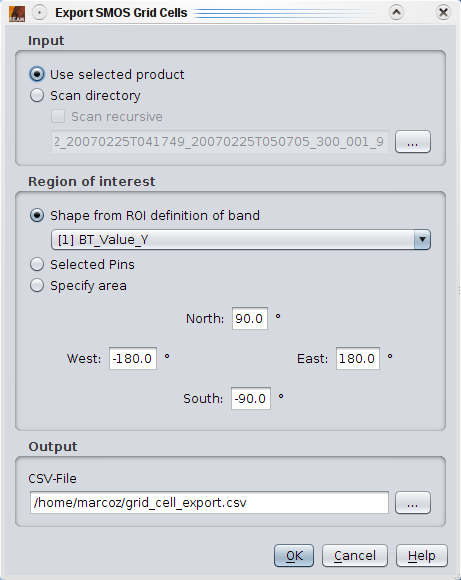

| SMOS Grid Cell Export |
|
The grid cell export tool allows to write the data of a selection of grid cells as into a CSV (character separated values) file. The values are separated by a semicolon.

Input: The selected product within VISAT can be for the export. Alternatively the export tool can do an directory scan to export data from multiple SMOS products. This directory scan can be either flat, where only products that reside in the selected directory are found, or recursive, where also all sub directories are searched for products.
Region of interest: There are three different possibilities to specify for which grid cells data should be exported.
Output: The CSV file to which the data is written. Please be aware that the amount of data can be huge, if the region of interest contains many grid cells.